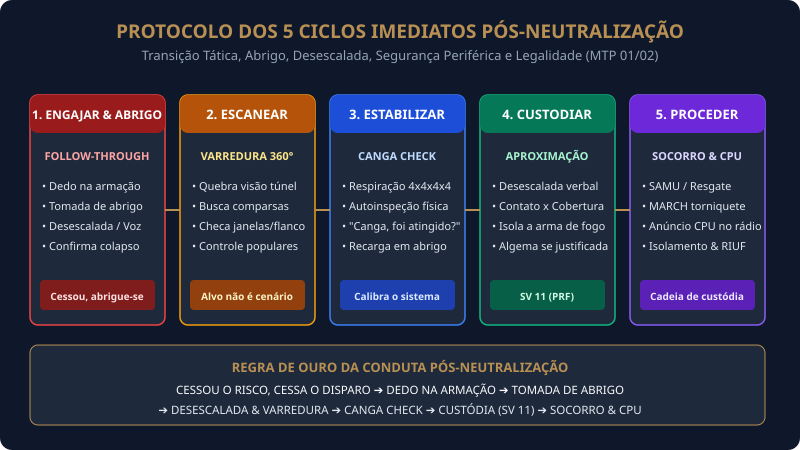

Acompanhamento de Visada, Desescalonamento Imediato, Protocolo dos 5 Ciclos e Segurança Jurídica (MTP 01 e MTP 02)
Atualizado em: 04/11/2026
O emprego de arma de fogo pelo policial militar tem como finalidade legal estrita fazer cessar a injusta agressão, atual ou iminente (Art. 25 do Código Penal e MTP 01). No instante em que o agressor é neutralizado (colapso físico, perda do controle da arma ou interrupção voluntária da resistência armada), a autorização legal para disparos cessa imediatamente.
Disparos efetuados após a perda da capacidade ofensiva do agressor configuram excesso punível penal e disciplinarmente (Art. 23, parágrafo único do CP).
Revogaram expressamente a Portaria Interministerial nº 4.226/2010, reafirmando que é vedado o disparo de arma de fogo contra pessoa em fuga desarmada ou que não represente risco iminente de morte ou lesão grave para os policiais ou terceiros.
Assista à síntese explicativa sobre os fundamentos legais, a transição tática e o encadeamento dos cinco ciclos operacionais após o confronto armado:
Videoaula Oficial — Conduta Pós-Neutralização da Ameaça: O Protocolo dos 5 Ciclos Imediatos. (Fonte: Central Virtual de Treinamento - CVT / PMMG • Duração: 01:30 min • Full HD 1080p)
Axioma da Instrução: O desfecho seguro do confronto armado depende do controle emocional, da manutenção da disciplina de cano e dedo, e da aplicação imediata do protocolo MARCH em caso de ferimento arterial na guarnição.
Cessados os disparos, o militar mantém o acompanhamento da visada, conquista abrigo imediato e inicia a desescalada do nível de força por meio do controle verbal:
REGRA DE SEGURANÇA: Mantenha o dedo fora do gatilho imediatamente após o último disparo consciente, apoiando o indicador reto ao longo da armação da arma, e busque abrigo sem perder o enquadramento do setor.
Mantenha o enquadramento do aparelho de pontaria no centro de massa do agressor durante a queda para certificar-se da cessação da agressão.
Com o dedo na armação, conquiste abrigo balístico imediato e baixe a arma para a posição de guarda baixa (ângulo aproximado de 45°), liberando o campo visual do entorno.
Desescalone o nível de força e assuma o controle verbal imediato com comandos curtos e enfáticos: "Polícia! Fique parado, não se mexa, mostre as mãos!".
Movimente a cabeça e os olhos em leque para identificar eventuais comparsas, transeuntes na linha de tiro ou novos abrigos balísticos disponíveis.
A gravação em câmera corporal demonstra a dinâmica real do confronto: a agressão súbita, a resposta com disparos defensivos, a interrupção imediata no momento do colapso da ameaça e a transição para a varredura visual e controle do local:
Vídeo 1 — Gravação em câmera corporal (Bodycam): reação defensiva armada, neutralização da ameaça e controle inicial do perímetro. (Fonte: Acervo Técnico CVT/PMMG)
Pontos de Análise Técnica: Observe a cessação imediata dos disparos no momento em que o indivíduo vai ao solo, a manutenção do dedo fora do gatilho durante a tomada de abrigo e a quebra da visão em túnel com varredura do ambiente.
O registro operacional documenta a atuação da guarnição imediatamente após a neutralização armada em via pública: o desembarque tático sob proteção da viatura, a aproximação em binômio (contato e cobertura), o controle e isolamento da arma de fogo e a chegada do reforço para cerco e preservação:
Vídeo 2 — Atuação da guarnição policial pós-neutralização: tomada de abrigo na viatura, aproximação em binômio e isolamento da arma de fogo. (Fonte: Acervo Técnico CVT/PMMG • Duração: 01:25 min)
Pontos de Análise Técnica: Observe a utilização do bloco do motor e da blindagem da viatura como abrigo imediato, a progressão coordenada com canos voltados à ameaça em plano seguro, a contenção visual contínua sem avanço precipitado e a chegada célere de viaturas de apoio para isolamento da área (Art. 158-A do CPP).
Para padronizar as ações da guarnição após o emprego de arma de fogo, o procedimento operacional da PMMG estrutura-se em cinco ciclos sequenciais:

Figura 1 — Fluxograma dos 5 Ciclos Imediatos Pós-Neutralização. (Fonte: MTP 3.04.01/2020-CG — PMMG)
Follow-through no centro de massa, dedo na armação, conquista imediata de abrigo balístico e desescalada inicial com comandos verbais imperativos.
Quebra da visão em túnel a partir do abrigo balístico, varredura visual em leque e identificação de comparsas armados ou riscos periféricos.
Sob abrigo, realização do Canga Check (autoinspeção física e conferência verbal de autolesões sob adrenalina) e recarga tática do armamento.
Aproximação em canga (Contato x Cobertura), isolamento da arma do agressor e algemação condicional (aplicada apenas se justificada pelas circunstâncias do caso concreto sob a fórmula PRF da Súmula Vinculante 11, sem obrigatoriedade automática).
Acionamento prioritário do SAMU/COBOM, aplicação do Protocolo MARCH se houver hemorragia massiva, preservação da cena (Art. 158-A do CPP) e comunicação ao COPOM e CPU.
Ainda que o suspeito esteja caído, persiste o risco de reação ou acesso a armas secundárias. A aproximação deve ser realizada de forma coordenada:
O Policial de Contato realiza a algemação enquanto o Policial de Cobertura mantém o enquadramento de segurança. A algemação não é automática nem obrigatória: conforme a Súmula Vinculante nº 11 do STF, seu uso é excepcional e exige fundamentação por escrito no REDS sob a fórmula PRF: perigo à integridade física, resistência ou fundado receio de fuga.
Se o policial militar ou seu companheiro for atingido e apresentar hemorragia exsangüinante em extremidade (letra M do protocolo MARCH), suspende-se a progressão para a aplicação imediata do torniquete de combate em posição alta e apertada. O controle da hemorragia arterial tem primazia sobre a custódia do infrator já incapacitado.
A finalização da ocorrência com emprego de arma de fogo exige medidas periciais e administrativas imediatas:
Transmita via rádio com brevidade e precisão: "Disparos de arma de fogo efetuados pela guarnição em legítima defesa; local controlado; solicitada presença do CPU e socorro médico de urgência".
Isole o perímetro com fita zebrada. Preserve estojos deflagrados, projéteis aparentes e a arma do agressor na posição original. A integridade dos vestígios é exigência do Art. 158-A do Código de Processo Penal.
Redija o relatório com dados objetivos e circunstanciados: distância do engajamento, atitude e agressão inicial do suspeito, comandos verbais desobedecidos e preenchimento do Relatório Individual do Uso da Força (RIUF).
Toque ou clique em uma alternativa para verificar o retorno doutrinário.